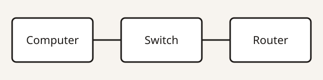

Introduction to Computer Networking
These notes explain the pictures in the networking lesson. They were written and reviewed with the lesson. They are a handout, not a transcript of every spoken word.
How a message crosses a network
A message leaves a computer, crosses a switch on the local network, and then a router sends it toward another network.

Addresses
The switch uses a hardware address to deliver a message on one local network. The router uses an IP address to choose a path between networks.
Compare a switch and a router
| Device | What it connects | Address it uses |
|---|---|---|
| Switch | Devices on one local network | Hardware address |
| Router | Separate networks | IP address |
Keep a copy
The same notes are also available as a tagged PDF. Open Networking Notes PDF from this folder, or use the document links on the lesson player.